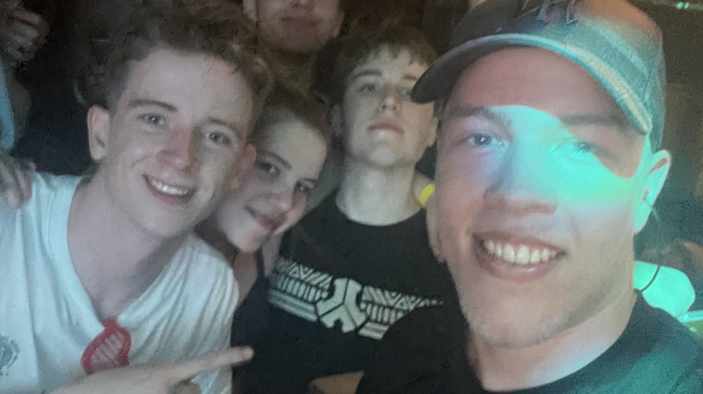
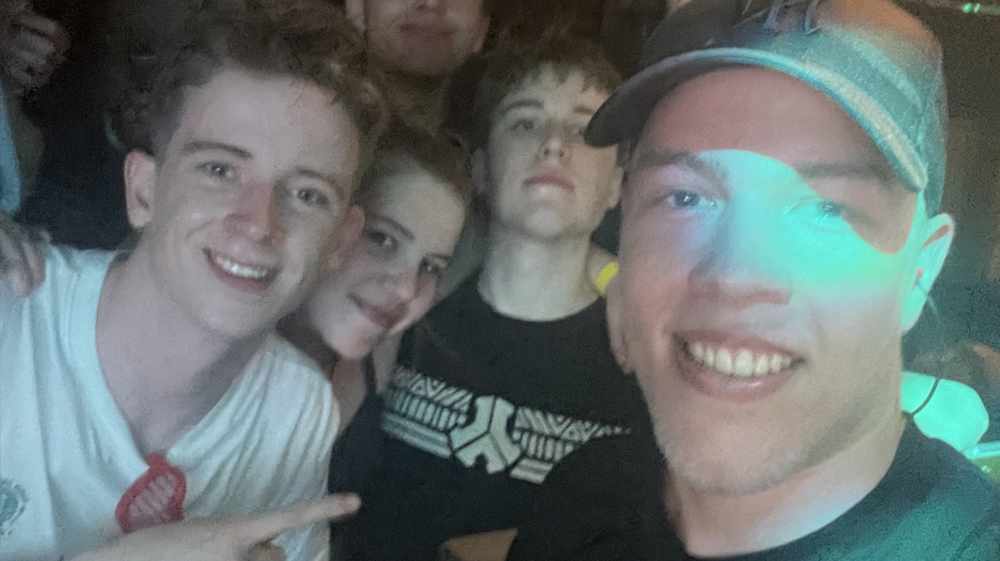

Branding voor Vertile
Voor mijn Sprint X project ga ik een deel van de branding van een artiest genaamd Vertile maken. Vertile is op het moment de grootste upcoming rawstyle artiest wereldwijd. Ik heb hiervoor gekozen omdat ik fan ben van deze artiest en omdat ik de eerste proftaak rondom de branding van een artiest heel leuk vond om te doen. Vertile heeft nog niet veel branding, ik wil voor hem een logo, merchandise en één pagina van een webshop ontwerpen. In mijn documentatie heb ik een overzicht van mijn planning van deze proftaak.

 
